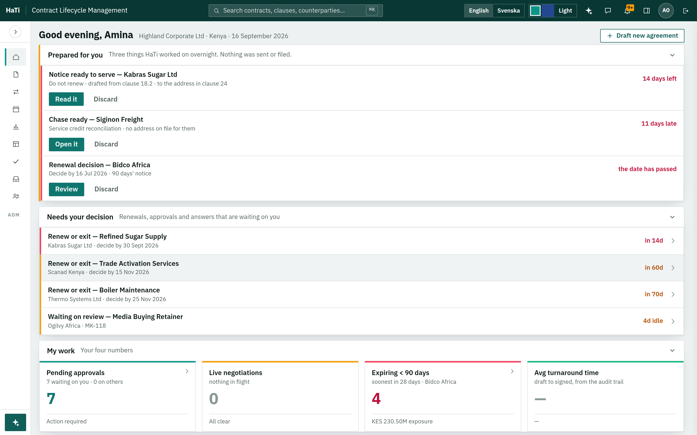
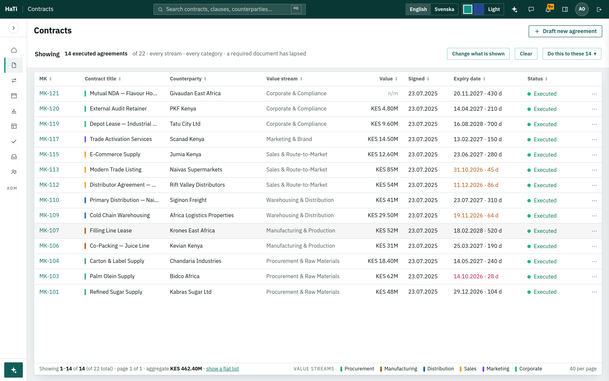
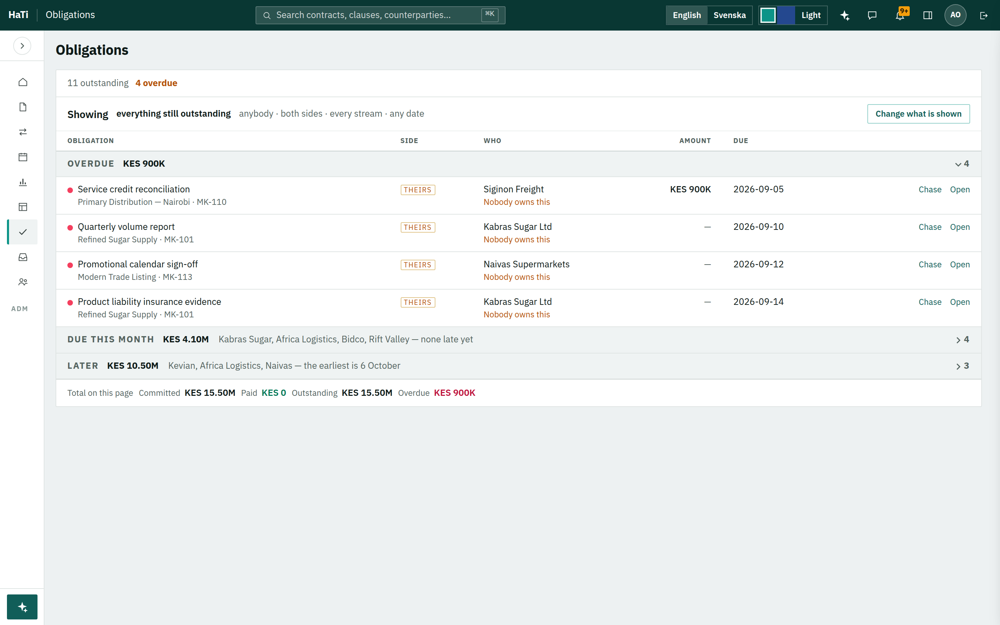
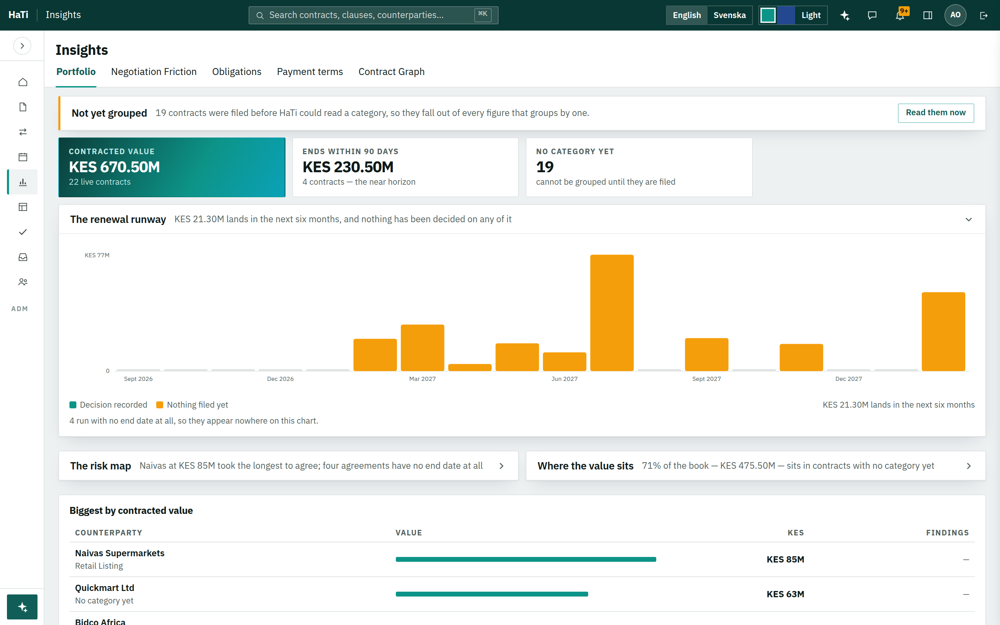
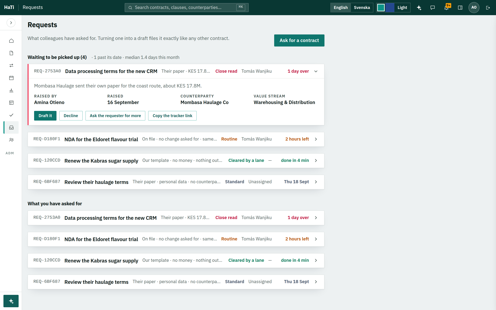

This is the whole thing. It is not a component or a feature — it is a way of deciding
what a screen shows first, and what it makes you ask for.
1Name the groupsEverything on a screen belongs to a group, and the group has a
plain-English name. Not “card” and “panel” and “widget” — The
deal, The record, Prepared for you, Overdue.
2A shut group still answersA collapsed section is one row that carries its own
summary, so most of the time you never open it. A collapsed group that just says its own name has failed.
3Open what is being acted onThe group with a decision in it opens and carries
an accent. Reference opens shut. Ironclad’s rule: hide what is not typically amended.
4Label above value, em-dash for silenceSmall uppercase label, value beneath it,
four to a row. Where nothing is recorded, an em-dash — never a blank, never a guess. Icertis’s
convention, and already HaTi’s.
5Controls state themselvesA row of five dropdowns becomes one sentence saying
what is in force, with a button to change it. You read the state instead of decoding it.
And the rule that governs the other fiveA group is not drawn at all when it has nothing to say. That
is HaTi’s own empty:hidden, which is why the renewal card does not exist outside its window.
Drawn, it is this. Two section heads and one open body, in
HaTi’s own metrics — these are live in the page you are reading, not pictures.
Renewal decision
Decide by 30 September 2026 — 90 days’ notice, and it ends 29 December 2026.14 days left
The deal
2 departures from your standards
Payment terms
30 days cl. 2
Volume rebate
3% over 120,000 t cl. 9
Liability cap
12 months’ fees cl. 11
Exclusivity
—
The record
Highland Corporate Ltd and Kabras Sugar Ltd · Procurement & Raw Materials · Raw Material Supply Agreement
Shut, open, shut. The third row tells you the answer without being
opened — that is rule two, and it is what stops a page of sections becoming a page of doors.
ii
The same grammar, six times
It reads differently on a dashboard, a table, a worklist and an analysis page — which
is the point. Applying it literally everywhere would be cargo cult. Each screen below says what the grammar
actually means there. Tick Full size to read any picture at the width HaTi draws it.
1 of 6
The contract Overview — the reference
Where the grammar came from
What it means here: an object page. Everything on it is one topic — what this contract says —
so it becomes one column of named sections rather than an attribute panel plus a column of cards. The deal opens
because it is what you came for; the filing record, the certificates, the family and Copilot’s readings are
one row each until you want them.
Today
With the grammar
1,046px of card stack becomes 543px of sections — holding twenty terms instead of
eight, and fitting the screen without scrolling.
2 of 6
Home
Rule 3 does the work: open what is being acted on
What it means here: not collapsing things — reordering them. Home already had four sections, but
the two you can act on sat underneath eight tiles of numbers. Under rule 3, work comes first and reference goes
last: Prepared for you and Needs your decision lead, My work follows, and The book
— the portfolio numbers that change slowly — is one shut row carrying its own figures.
Today
With the grammar

The first thing you can act on moves from 487px down the page to 136px. Nothing is removed
— the eight tiles are all still there, two of them one press away.
3 of 6
Contracts
Rule 5 does the work: controls state themselves
What it means here: the table is already right — it is the filter bar that makes you decode rather
than read. Five dropdowns, each showing its own default, tell you nothing at a glance; you have to read all five
to know what you are looking at. Under rule 5 they become one sentence that says it — Showing 14
executed agreements of 22 · every stream · every category · a required document has
lapsed — with Change what is shown beside it.
Today
With the grammar

Six controls in a 50px bar become one sentence you can read in a glance — and the
cohort act sits beside it, where it belongs, because it acts on exactly what the sentence describes.
4 of 6
Obligations
Rules 2 and 5 together — the strongest result in the set
What it means here: this page was already half-way there. It groups into named bands and each band
already carries a count and a money total — which is rule 1 and most of rule 2 already built. What was
missing is that the bands do not shut. Under rule 2 they do, and a shut band gains one more thing: who is in it
and when the earliest one falls due. So the page opens on what is late and summarises the rest in two lines.
Today — eleven rows, five filters
With the grammar

Eleven rows become four rows and two sentences — and the two sentences still tell you
the money, the count, the counterparties and the earliest date. On a real book of two hundred obligations this is
the difference between a worklist and a wall.
5 of 6
Insights
Rule 2 with a twist: the summary is the finding
What it means here: a chart is not a fact, it is a picture you have to read. Under rule 2 each panel
gains a head that states what the chart actually found — KES 21.30M lands in the next six months, and
nothing has been decided on any of it — so the page can be read without reading a single chart. Then
the panels you are not looking at shut, keeping their finding. And the amber banner across the top stops being a
banner and becomes a section row, which is HaTi’s own no-new-bands rule applied to a band that already
existed.
Today
With the grammar

Three findings are now readable in three lines, and the chart you actually want stays open
beneath its own. Nothing is lost: both shut panels open on a press, with their charts intact.
6 of 6
Requests
Rules 1, 2 and 3 on a list — a request becomes a row
What it means here: every request is currently a card holding a title, a paragraph, four facts and three
buttons, whether or not you intend to do anything about it. Under the grammar a request is a row —
reference, what it is, what shape it is in, who has it, when it was promised — and opens into the paragraph,
the facts and the acts when you choose it. The one that is over its date opens by itself, with an accent, because
that is rule 3.
Today — four cards fill the screen
With the grammar

Four requests shrink from 534px to 307px — with one of them fully open — and
the page goes from showing four requests to showing eight.
iii
What it costs and what it buys
Every figure measured in the running product at 1440 × 900, on the same
22-contract book.
Screen
Today
With the grammar
Overview — the busiest contract
1,046px, scrolling
543px, no scroll, 20 terms
Home — where the first act sits
487px down
136px down
Contracts — the filter region
6 controls, 50px
one sentence
Obligations — rows on arrival
11 rows, 5 filters
4 rows, 2 summaries
Insights — findings you can read without a chart
0
3
Requests — four of them
534px, 4 on screen
307px, 8 on screen
Nothing is removed anywhere. Every tile, chart, filter, button and figure that exists today still
exists; it is grouped, named, and in several cases one press away instead of permanently in your eye.
And nothing here is a feature. There is no new capability in this document — it is the same
product, ordered by one rule about what a screen shows first.
iv
Where the grammar does not go
A pattern applied everywhere stops being a design and becomes a tic. Four places it should
not reach, and why.
The contract itselfThe agreement is paper. It does not get sections, summaries, chevrons or an accent
bar, and it never loses a pixel to chrome. HaTi already guards this and should keep guarding it.
The negotiation columnIt has its own grammar — piles, verbs on the face, the clause leading
each row — and it was designed against a real artifact. Two grammars on one screen is worse than one
imperfect one.
DialogsA dialog exists because a decision cannot proceed without the reader. Collapsing half of it
hides the thing they are being asked about. Dialogs stay flat and short.
The phoneBelow 768px HaTi draws its own shell, where everything is already one column of rows. The
grammar is what that shell does naturally; forcing section heads onto it would only spend height.